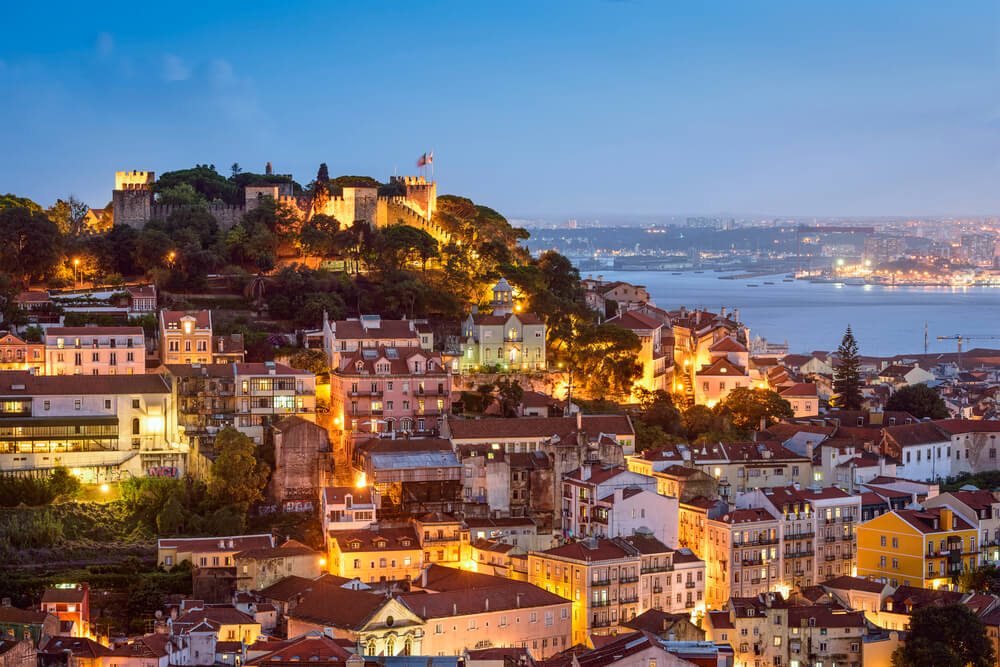

Lisabona
Barcelona
Roma

Cele mai bune hoteluri din Lisabona ->directionare pe Booking
Alte cateva locuri de vizitat in Lisabona:
1. Muzeul Colectiei Berardo
2. Praca do Comercio
3. Catedrala Se de Lisboa
4. Mosteiro dos Jeronimos
5. Monumentul Descoperirilor
6. Gradinile Principe Real
7. Manastirea Batalha
Preturile hotelurilor:
Hostelurile cu 8-10 paturi costa aproximativ 14 euro pe noapte, in timp ce hostelurile cu 4-6 paturi sunt in medie 18 euro. Asteptati-va ca preturile sa fie usor mai mari in lunile pline de vara (peste 20-25 euro pe noapte). Wi-Fi-ul gratuit si dulapurile sunt standard, iar majoritatea hostelurilor au si bucatarii. Daca aveti un buget mic, ramaneti la un hostel cu mic dejun gratuit pentru a economisi bani.
Hotelurile medii incep de la aproximativ 60 euro. Acestea includ, in general, mic dejun gratuit si Wi-Fi. Majoritatea hotelurilor de trei stele pot costa aproximativ 115 euro pe noapte (deseori includ si transfer gratuit de la aeroport).
Mancare:
A manca din mers este cel mai bun mod de a-ti economisi bugetul in Lisabona. Incercati prego (sandwich cu carne de vita) sau bifana (sandwich cu carne de porc). Le puteti gasi la cafenelele locale la doar 5 euro. O masa de baza pentru fast-food (McDonald's) costa in jur de 6-7 euro.